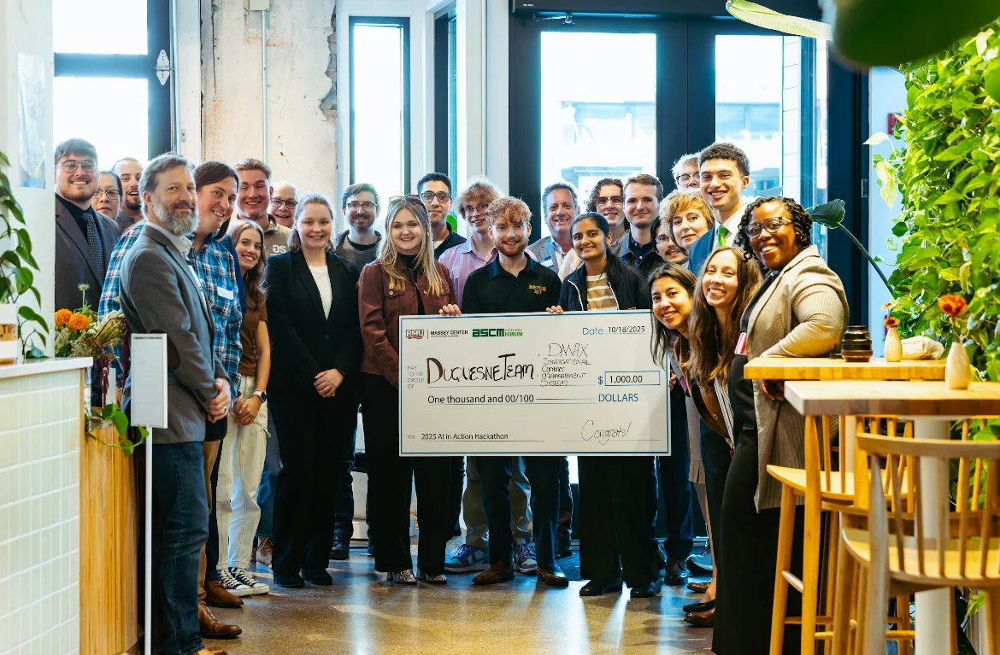
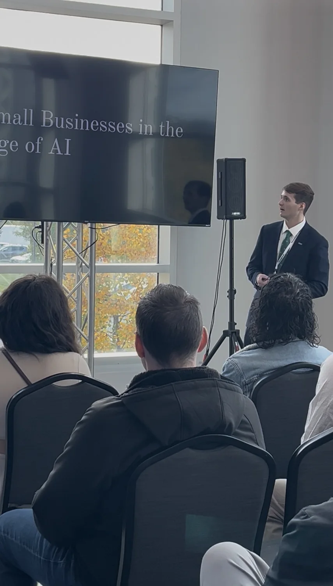
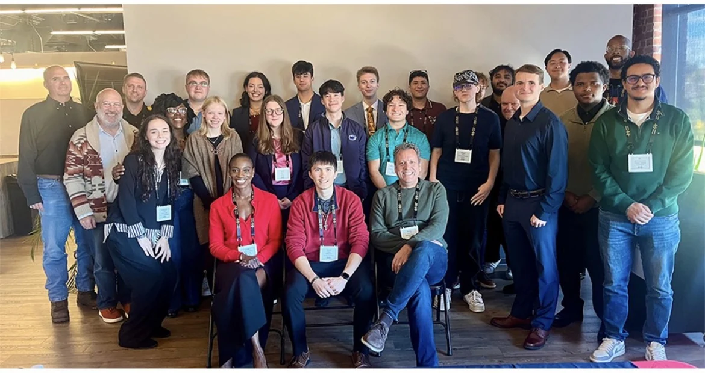
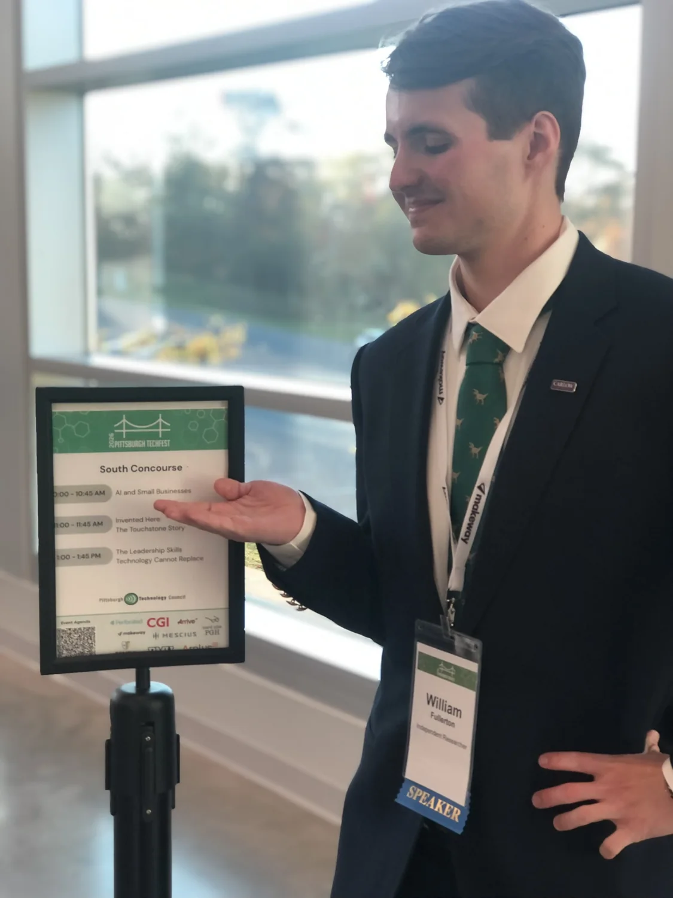
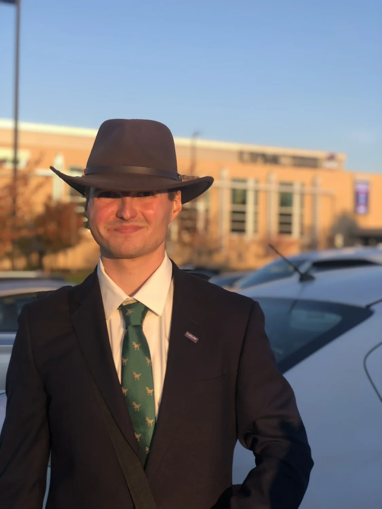

Founder & Lead Organizer
AI in Action Hackathon
Bridging local small businesses and nonprofits with regional student talent to address real challenges through student-built AI.
Explore the hackathonA collection of projects, presentations, and community work—turning ideas into things people can use.

Bridging local small businesses and nonprofits with regional student talent to address real challenges through student-built AI.
Explore the hackathon
A talk about connecting small businesses, student talent, and technology leaders around practical AI solutions.
Watch, read, and download
Student-built work in responsible AI, mental health, financial assistance, and environmental prediction.
See projects & awards
An early-stage framework and proof of concept exploring how learning across living systems might inform AI training.
Explore FULPs research
A book tracing the origins of the framework, its theory and iterations, and the development of a first working model.
View on Amazon ↗